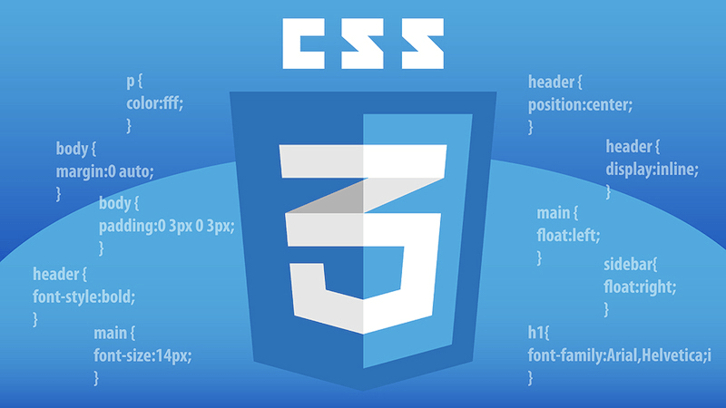
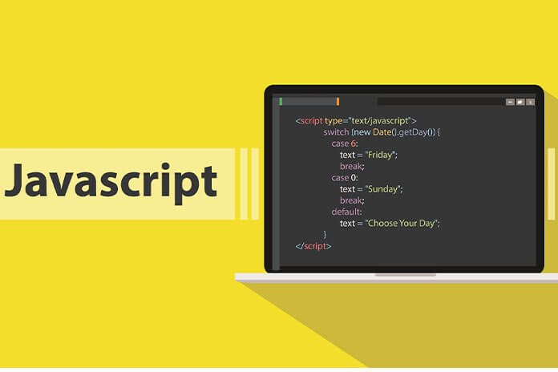

В стороне
Компьютер
Хороший компьютер - это компьютер, работающий по заранее запрограммированной программе. Тот же термин, что и компьютер. Однако, помимо выполнения К. вычислительной работы, его функции гораздо шире. В развитии компьютеров можно отметить несколько поколений К. Эти поколения отличаются друг от друга типами элементов, конструктивными и технологическими особенностями, логической структурой, программным обеспечением, техническими деталями, уровнем удобства использования оборудования.
История
information


Услуги
Информация
-
Информация о HTML5
Язык разметки гипертекста или HTML для документов, предназначенных для отображения в веб-браузере. язык обозначений по умолчанию. Сюда входят такие технологии, как каскадные таблицы стилей (CSS) и JavaScript. языки сценариев могут помочь. Веб-браузеры получают HTML-документы с веб-сервера или локальной памяти, а также мультимедийные документы. интернет страницы. HTML семантически описывает структуру веб-страницы и изначально содержит предупреждения о появлении документа. Элементы HTML - это строительные блоки HTML-страниц. С конструкциями HTML другие объекты, такие как изображения и интерактивные формы, могут быть добавлены на отображаемую страницу.

-

Информация о Css
Описывать презентацию документа с каскадными таблицами стилей (CSS), написанную на языке разметки, таком как HTML. - это язык таблиц стилей, используемый для. [1] Мир в дополнение к CSS HTML и JavaScript Это основная технология Интернета. [2] CSS для обеспечения разделения представления и содержимого, включая макет, цвета и шрифты разработан. [3] Это разделение может улучшить доступ к контенту; особенности презентации обеспечение большей гибкости и контроля в спецификации; отделить соответствующий CSS Он позволяет вам делиться форматированием нескольких веб-страниц, отображая их в файле .css, который является систематическим. снижает сложность контента и повторение; и страницы, которые совместно используют файл, и он включить кеширование файла .css, чтобы повысить скорость загрузки страницы между форматами.
-
Информация о загрузке
Bootstrap - это библиотека HTML, CSS и JS, которая разрабатывает информативные веб-страницы. направлен на упрощение вывода (в отличие от веб-приложений). Добавить в веб-проект основная цель - применить к этому проекту параметры цвета, размера, шрифта и макета Bootstrap. Таким образом, ключевым фактором является то, нравятся ли эти варианты ответственным разработчикам или нет. ли После добавления в проект Bootstrap является стилем по умолчанию для всех элементов HTML. дает определения. Результат - один для прозы, таблиц и элементов форм в веб-браузерах. образуется другой внешний вид. Кроме того, разработчики могут дополнительно настраивать внешний вид своего контента. Они могут использовать классы CSS, определенные в Bootstrap. Например, Bootstrap бывает светлым и темным. таблицы цветов, заголовки страниц, более привлекательные цитаты и предоставил выделенный текст.

-

Информация о JavaScript
JavaScript (/ ˈdʒɑːvaˌskrɪpt /), [10] обычно сокращается как JS в соответствии со спецификацией ECMAScript. - новый язык программирования. [11] JavaScript является высокоуровневым, часто своевременным и многочисленным это парадигма. Это динамический набор номера, объектная ориентация на прототипах и первоклассный Особенности. Наряду с HTML и CSS, JavaScript является одной из основных технологий всемирной паутины. [12] Более 97% веб-сайтов используют его на стороне клиента для определения поведения веб-страниц [13] часто включает сторонние библиотеки. [14] Во всех основных веб-браузерах на пользовательском устройстве есть специальный механизм JavaScript для выполнения кода. JavaScript как мультипарадигмальный язык - это функциональное и императивное программирование, основанное на событиях. методы. Это текст, даты, регулярные выражения, стандартные структуры данных. и имеет интерфейсы прикладного программирования (API) для работы с объектной моделью документа (DOM).